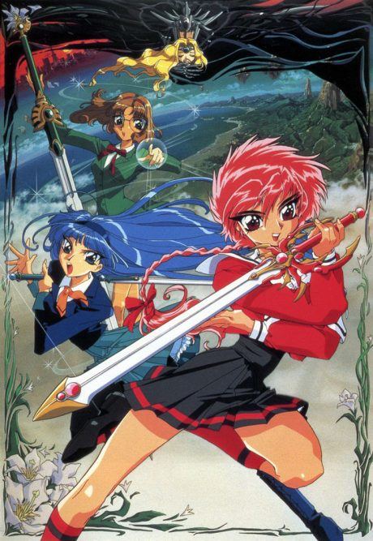

The Familiar of Zero
ゼロの使い魔
We haven't found where the anime ends in the light novel yet.
6.8AniList score
—Animeter, no votes yet
49episodes, 4 seasons
Rate it or report where you stopped
4 seasons, 49 episodes
In airing order. Episode numbers on this site count straight through every season, so season 2 starts at episode 14.
1
2006 · TV
The Familiar of Zero
Episodes1–1313 ep
2
2007 · TV
The Familiar of Zero: Knight of the Twin Moons
Episodes14–2512 ep
3
2008 · TV
The Familiar of Zero: "Rondo" of Princesses
Episodes26–3712 ep
4
2012 · TV
The Familiar of Zero F
Episodes38–4912 ep
Sources: AniList
More like The Familiar of Zero
 Manga Vol. 56.6
Manga Vol. 56.6
 Unclear7.0
Unclear7.0
 Manga Vol. 47.2
Manga Vol. 47.2

Unclear7.2 Manga Vol. 128.0
Manga Vol. 128.0
 Manga Vol. 55.9
Manga Vol. 55.9